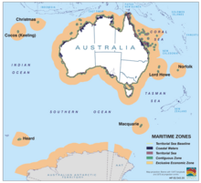
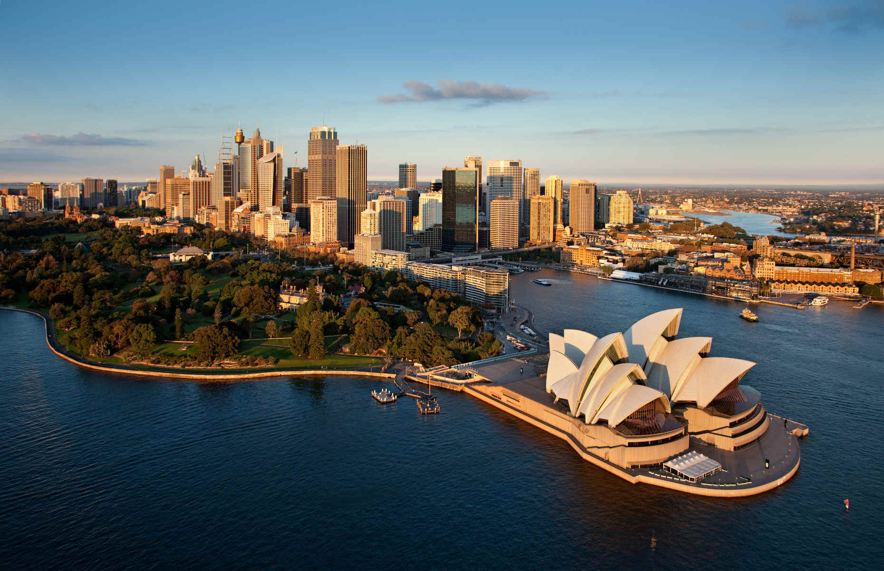

.svg.png) Australia
Australia

To know:
Capital : Canberra
Population (2018) : 29 millions
Form of the State: Constitutional Monarchy
King: Charles III
Parliament: Parliament
Official languages: English
Cash : Australian Dollards
Australia, located between the Pacific and Indian Oceans. It includes the mainland of the Australian mainland, the island of Tasmania as well as many smaller islands. It is bordered by Indonesia, East Timor and Papua New Guinea to the north, the Solomon Islands, Vanuatu and New Caledonia to the northeast and New Zealand to the southeast. The closest state to Australia is Papua New Guinea, both separated by the Torres Strait, which is only 40 km wide at its narrowest point
Fauna and flora
Although most of the country is desert or semi-arid, Australia has no shortage of diverse natural habitats to support different animal and plant species. For some of the animals on this continent, scientists speak of Australian megafauna. Due to the highly variable climate of this territory and its very long isolation, a particular fauna and flora have been able to develop, such as wingless birds, or the monotreme and marsupial mammals, which preceded in evolution the placental mammals. About 85% of flowering plants, 84% of mammals, more than 45% of birds and 89% of fish on the continental shelf are considered endemic species. The most well-known animal species are the koala, kangaroo, wallaby, emu, platypus, wombat, echidna and dingo.
Food
For 50,000 years, the Aborigines have eaten a cuisine based on animals and plants native to their region: grilled kangaroos, seafood, honey, berries, etc. Beginning in 1788, English cuisine brought to the country by early settlers became the basis of Australian cuisine. It consists of pies, meat, mainly beef and lamb, but also sometimes kangaroo: steaks, grilled chops and others usually accompanied by vegetables.
